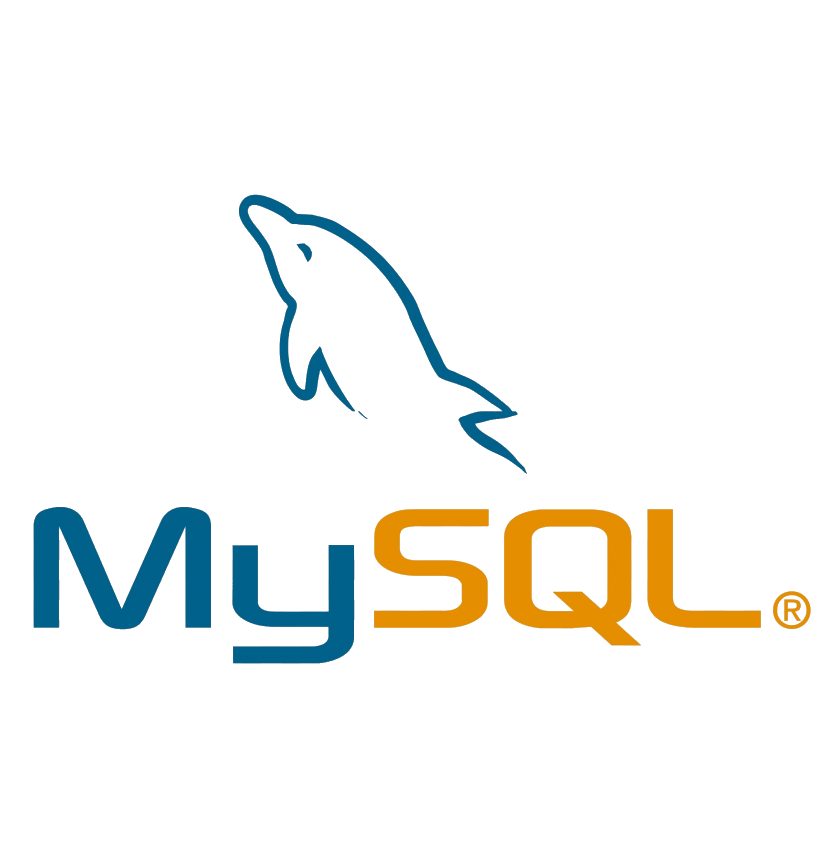
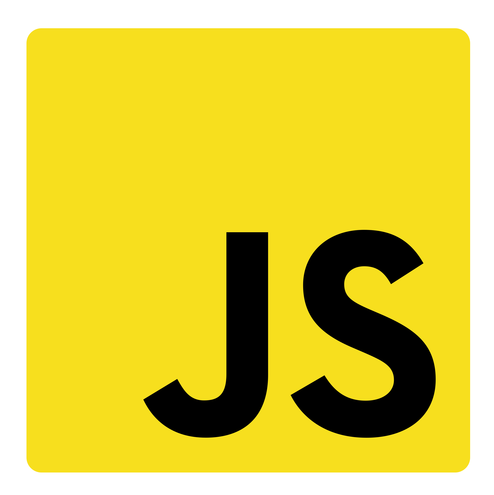
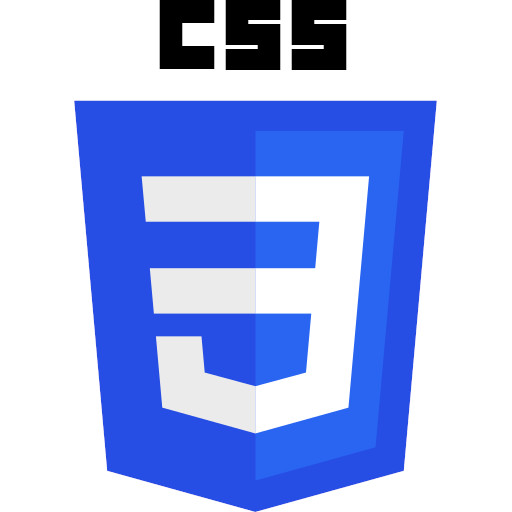
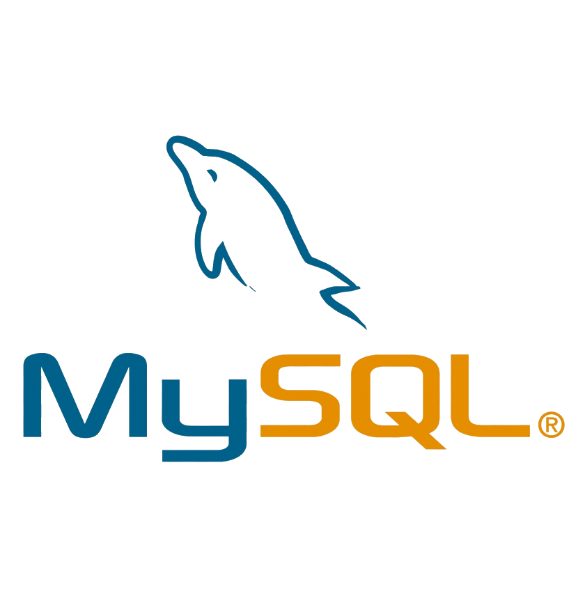
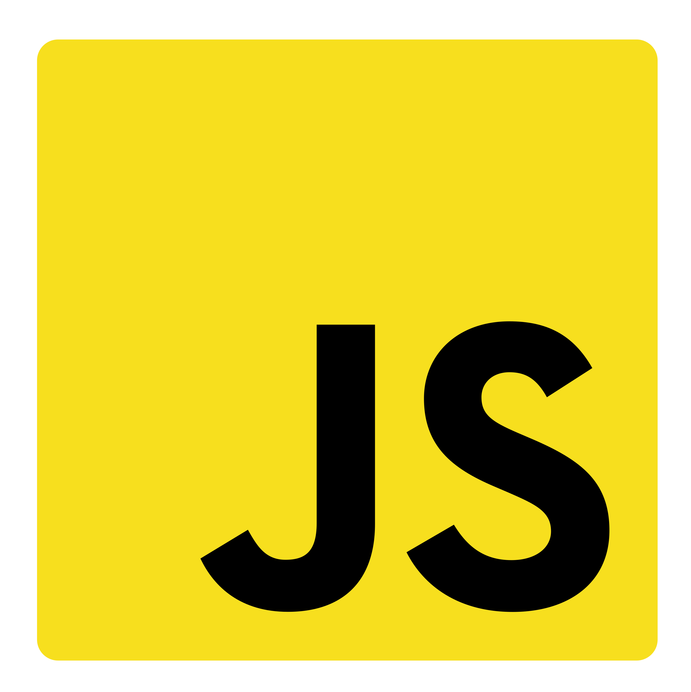
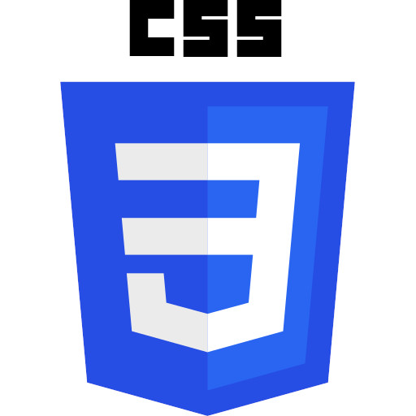
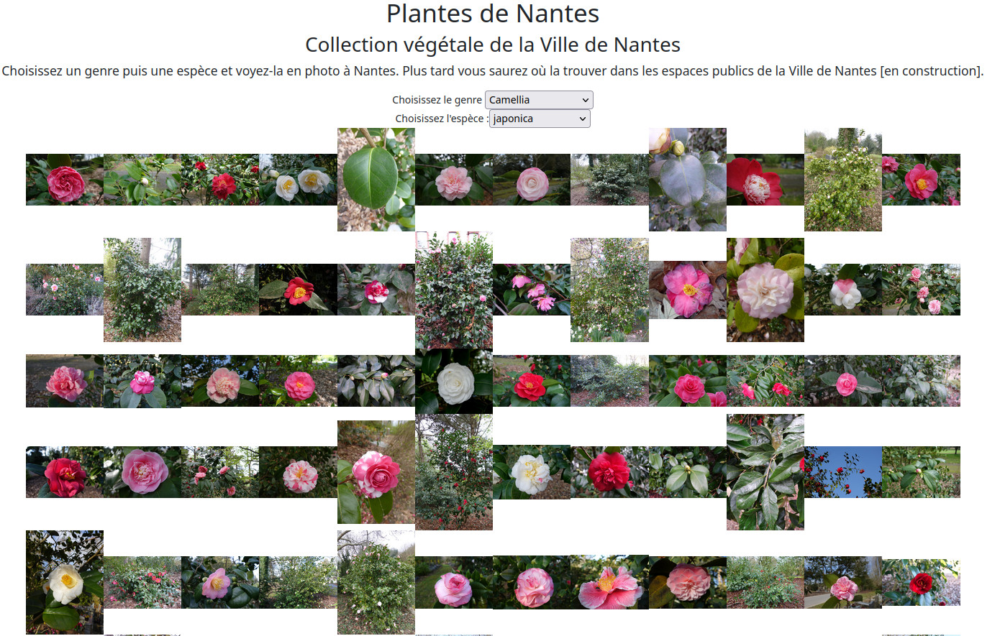

Site en construction
Bonjour, je suis Olivier Maisonneuve
Développeur Web et Web Mobile
Après plus de 20 ans dans le bâtiment, j'ai entamé début avril une reconversion pour devenir développeur Web. Autonome, doté d'un esprit d'analyse et toujours prêt à apprendre, je je souhaite m’investir dans les projets de votre entreprise.
Mes compétences


 





Mes projets
Un petit jeu de la vie en JS
Une implémentation du classique jeu de la vie de Conway en Javascript.
Jouer avec les API de la ville de Nantes

Nantes Métropole fournit des API nombreuses et variées. L'occasion de s'amuser un peu et de rendre hommage à mon grand-père qui fut jardinier à la Ville de Nantes durant toute sa carrière